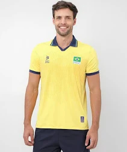

SSFM Esportes


O vôlei, criado em 1895 por William G. Morgan nos Estados Unidos, é um esporte coletivo jogado por duas equipes de seis jogadores em uma quadra dividida por uma rede. O objetivo é fazer com que a bola toque o chão do lado adversário, utilizando até três toques para devolvê-la ao outro lado. O jogo é disputado em sets, e a equipe que vencer três sets primeiro, geralmente até 25 pontos, ganha a partida. O vôlei se tornou rapidamente popular e foi introduzido nos Jogos Olímpicos em 1964, sendo hoje um dos esportes mais praticados e assistidos no mundo.

Bola de Vôlei Mikasa Oficial V200W
Preço:R$899,00
Tamanho:Único
Bola Oficial

Tênis Nike Giannis Immortality 3 Masculino
Preço:R$719,99
Tamanhos disponíveis: 39, 40, 41, 42, 43, 44 e 45
Camisa masculina vôlei Brasil olímpica CBV - Amarelo
Preço:R$199,99
Tamanhos disponíveis:P, M, G, GG e XGG
PERSONALIZAÇÃO INDISPONÍVEL
Kit Completo Vôlei Joelheira Meião Manguito Original
Preço:R$99,99
Tamanhos disponíveis: P, M e G/p>